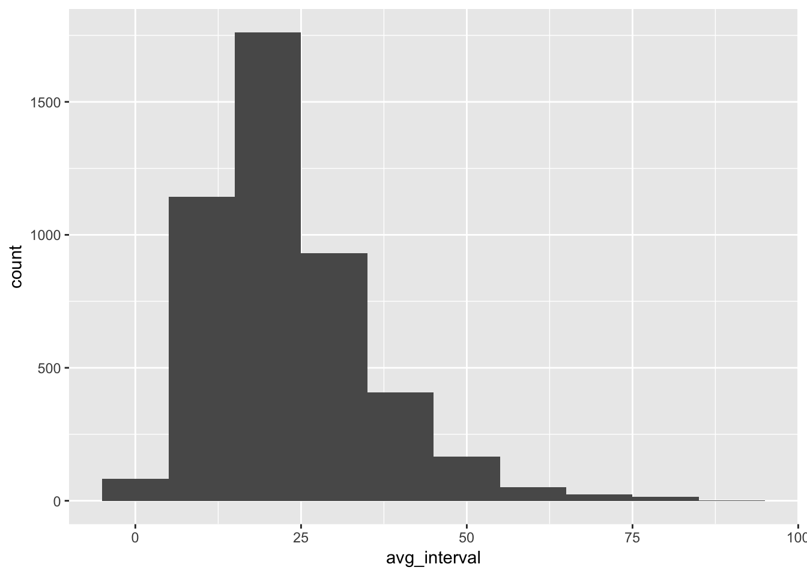
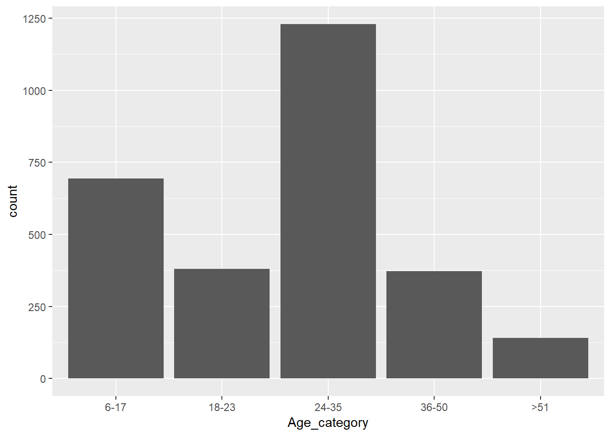
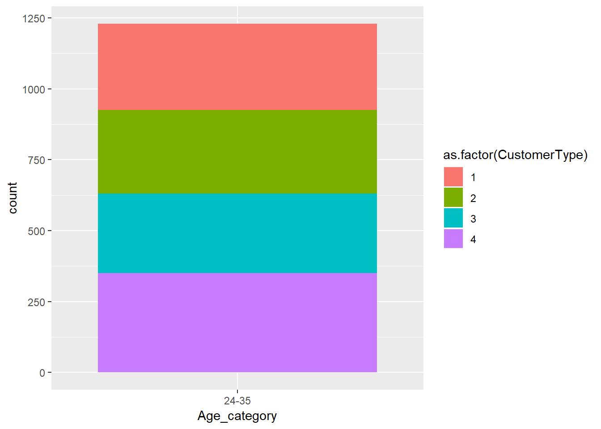
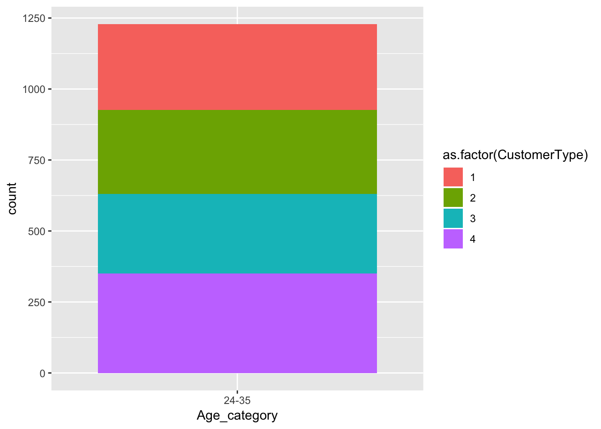
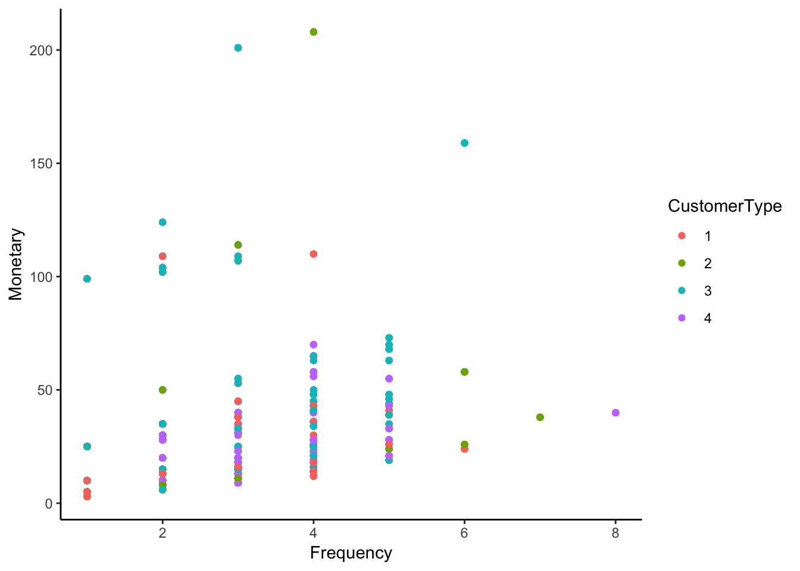
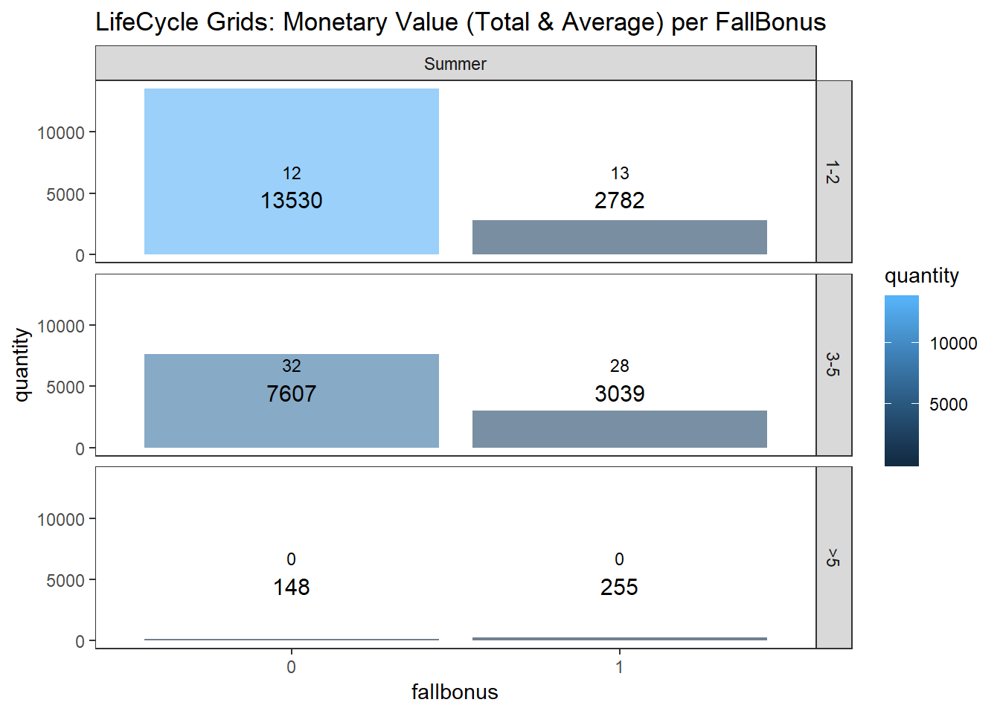
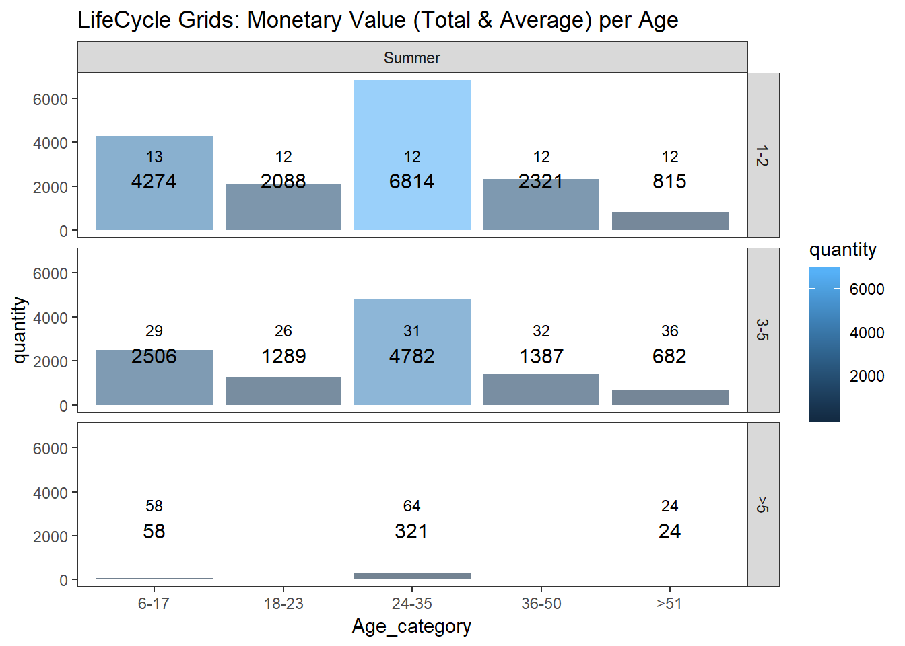
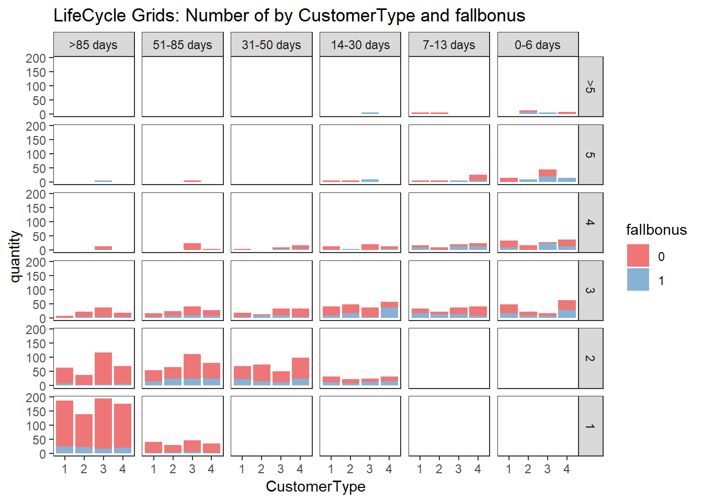
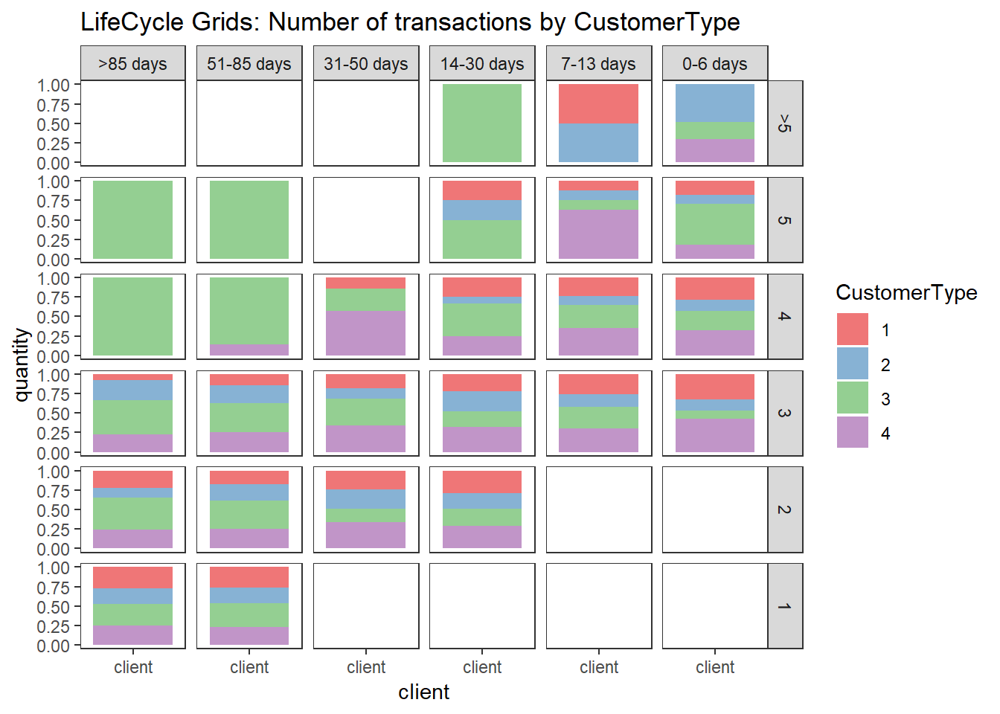
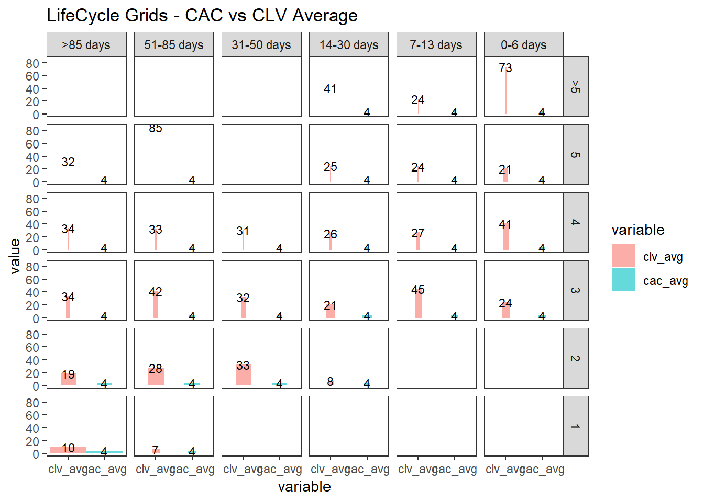

# Import customers data
customer <- read.csv("input/customerdata.csv" )
# Clean data
customer$Registrationdate <- as.Date(customer$Registrationdate)
customer$fallbonus <- as.factor(customer$fallbonus)
customer$CustomerType <- as.factor(customer$CustomerType)
customer$Sex <- as.factor(customer$Sex)
customer$Income <- as.factor(customer$Income)
#Let's create categories of Age (that could be relevant for the rest) :
customer <- customer %>%
mutate(Age_category=
ifelse(between(Age, 6, 17), '6-17',
ifelse(between(Age, 18, 23), '18-23',
ifelse(between(Age, 24, 35), '24-35',
ifelse(between(Age, 36, 50), '36-50', '>51'
)))))
customer$Age_category <- factor(customer$Age_category, levels=c('6-17', '18-23', '24-35', '36-50', '>51'))
# And let's check what we have
summary(customer)## X CustomerID CustomerType Registrationdate Sex
## Min. : 1 Min. : 1 1:1277 Min. :2016-07-01 0:2981
## 1st Qu.:1251 1st Qu.:1251 2:1282 1st Qu.:2016-12-08 1:2019
## Median :2500 Median :2500 3:1121 Median :2018-01-01
## Mean :2500 Mean :2500 4:1320 Mean :2017-08-13
## 3rd Qu.:3750 3rd Qu.:3750 3rd Qu.:2018-03-02
## Max. :5000 Max. :5000 Max. :2018-04-30
## Age fallbonus Income Age_category
## Min. : 6.0 0:4000 1:1671 6-17 :1241
## 1st Qu.:18.0 1:1000 2:1605 18-23: 639
## Median :27.0 3:1724 24-35:2224
## Mean :27.5 36-50: 655
## 3rd Qu.:33.0 >51 : 241
## Max. :80.0# Import transactions
tx.fall <- read.csv("input/fallfintrx.csv" )
tx.summer <- read.csv("input/summerfintrx.csv" )
# We need to add monetary value and convert the date
# This is the list of prices for each ProductID
prices <- c(2.99, 4.99, 9.99, 25, 99)
tx.fall <- tx.fall %>% mutate(Value = prices[ProductID], Date = as.Date(Date))
tx.summer <- tx.summer %>% mutate(Value = prices[ProductID], Date = as.Date(Date))
# Then we create a data frame with all data
tx.all <- tx.fall %>% union(tx.summer)
# And let's check what we have
summary(tx.all)## X TransID Date CustomerID
## Min. : 1 Min. : 1 Min. :2018-05-02 Min. : 4
## 1st Qu.: 387 1st Qu.: 387 1st Qu.:2018-06-12 1st Qu.:1380
## Median : 773 Median : 773 Median :2018-07-22 Median :2570
## Mean : 925 Mean : 925 Mean :2018-07-25 Mean :2554
## 3rd Qu.:1459 3rd Qu.:1459 3rd Qu.:2018-09-07 3rd Qu.:3766
## Max. :2231 Max. :2231 Max. :2018-10-31 Max. :4999
## ProductID Value
## Min. :1.00 Min. : 2.99
## 1st Qu.:1.00 1st Qu.: 2.99
## Median :2.00 Median : 4.99
## Mean :2.08 Mean : 8.86
## 3rd Qu.:3.00 3rd Qu.: 9.99
## Max. :5.00 Max. :99.00For later we need to keep the dates of beginning and ending of the periods:
# This will correspond to the history period to build the models
fall.begin <- min(tx.fall$Date)
fall.end <- max(tx.fall$Date)
# This will correspond to the forecast period to build and evaluate the models
summer.begin <- min(tx.summer$Date)
summer.end <- max(tx.summer$Date)
# This will correspond to the entire period to build the final model
all.begin <- min(tx.all$Date)
all.end <- max(tx.all$Date)# Import sessions
sessions.fall <- read.csv("input/fallsesstrx.csv" )
sessions.summer <- read.csv("input/summersesstrx.csv")
sessions.fall$Date <- as.Date(sessions.fall$Date)
sessions.summer$Date <- as.Date(sessions.summer$Date)
sessions.all <- sessions.fall %>% union(sessions.summer)The point of this part is to calculate the RFM for all active customers. We could base our RFM analysis either on sessions or on transactions. We opted for RFM analysis based on transactions because it is a better proxy for monetary value of a customer.
We defined:
# Calculated RFM based on all transactions (summer and fall)
# for each customer (who made at least one transaction)
customer.RFM <- tx.all %>%
group_by(CustomerID) %>%
summarise(Recency = as.numeric(all.end-max(Date)), Frequency = n(), Monetary = sum(Value))
summary(customer.RFM)## CustomerID Recency Frequency Monetary
## Min. : 4 Min. : 0.0 Min. :1.0 Min. : 2.99
## 1st Qu.:1360 1st Qu.: 44.5 1st Qu.:1.0 1st Qu.: 4.99
## Median :2551 Median : 87.0 Median :2.0 Median : 9.98
## Mean :2543 Mean : 86.7 Mean :1.8 Mean : 15.99
## 3rd Qu.:3768 3rd Qu.:129.0 3rd Qu.:2.0 3rd Qu.: 20.95
## Max. :4999 Max. :182.0 Max. :8.0 Max. :207.98Attention: since this list is build from tx.all it will only contain customers that made at least one transaction.
Now let’s create a list of active customers:
# Get all customerIDs of people who played at least once during the summer
customerID.active <- sessions.summer %>%
select(CustomerID) %>%
distinct(CustomerID)Now we have enough to create a RFM table of active customers but we might want other informations on sessions played. So, let’s create a table that summarise the information of the sessions played by customers:
customer.stats <- sessions.all %>%
group_by(CustomerID) %>%
select(-c(X, PlayID, Date)) %>%
summarise_all(funs(sum))
summary(customer.stats)## CustomerID Experience Pokestops Gyms
## Min. : 1 Min. : 1767 Min. : 9.0 Min. : 2.0
## 1st Qu.:1253 1st Qu.: 13473 1st Qu.: 49.0 1st Qu.: 21.0
## Median :2502 Median : 21504 Median : 77.0 Median : 36.0
## Mean :2501 Mean : 24695 Mean : 85.1 Mean : 40.7
## 3rd Qu.:3751 3rd Qu.: 31965 3rd Qu.:115.0 3rd Qu.: 55.0
## Max. :5000 Max. :142475 Max. :306.0 Max. :173.0
## Raids Social Pokemons Distance
## Min. : 0.00 Min. : 0.00 Min. : 4 Min. : 0.45
## 1st Qu.: 0.00 1st Qu.: 1.00 1st Qu.: 52 1st Qu.: 7.27
## Median : 1.00 Median : 3.00 Median : 88 Median : 13.42
## Mean : 4.01 Mean : 6.31 Mean :102 Mean : 19.44
## 3rd Qu.: 5.00 3rd Qu.: 7.00 3rd Qu.:136 3rd Qu.: 25.11
## Max. :67.00 Max. :68.00 Max. :508 Max. :129.14
## Duration
## Min. : 12
## 1st Qu.: 122
## Median : 213
## Mean : 357
## 3rd Qu.: 390
## Max. :3344Finally, we just need to combine the tables built previously to get our basetable:
# Add all informations to the table with all customers
recency.max = max(customer.RFM$Recency) + 1
customer <- customer %>%
left_join(customer.stats, by = "CustomerID") %>%
left_join(customer.RFM, by = 'CustomerID') %>%
select(-X) %>%
# We need to replace we 0 the missing values corresponding to customer who never bought any item
mutate(
Recency = replace_na(Recency, max(recency.max)),
Frequency = replace_na(Frequency, 0),
Monetary = replace_na(Monetary, 0)
)
# Filter only active customers
customer.active <- customer %>% filter(CustomerID %in% customerID.active$CustomerID)
# final basetable
summary(customer.active)## CustomerID CustomerType Registrationdate Sex Age
## Min. : 1 1:1225 Min. :2016-07-01 0:2815 Min. : 6.0
## 1st Qu.:1252 2:1144 1st Qu.:2016-12-07 1:1902 1st Qu.:18.0
## Median :2506 3:1069 Median :2017-12-16 Median :27.0
## Mean :2502 4:1279 Mean :2017-08-10 Mean :27.6
## 3rd Qu.:3751 3rd Qu.:2018-03-01 3rd Qu.:33.0
## Max. :5000 Max. :2018-04-30 Max. :80.0
## fallbonus Income Age_category Experience Pokestops
## 0:3771 1:1571 6-17 :1172 Min. : 1767 Min. : 10.0
## 1: 946 2:1509 18-23: 598 1st Qu.: 14127 1st Qu.: 52.0
## 3:1637 24-35:2097 Median : 22257 Median : 80.0
## 36-50: 616 Mean : 25343 Mean : 87.4
## >51 : 234 3rd Qu.: 32654 3rd Qu.:116.0
## Max. :142475 Max. :306.0
## Gyms Raids Social Pokemons
## Min. : 2.0 Min. : 0.0 Min. : 0.00 Min. : 4
## 1st Qu.: 23.0 1st Qu.: 0.0 1st Qu.: 1.00 1st Qu.: 56
## Median : 37.0 Median : 1.0 Median : 3.00 Median : 91
## Mean : 41.8 Mean : 4.1 Mean : 6.48 Mean :104
## 3rd Qu.: 56.0 3rd Qu.: 6.0 3rd Qu.: 7.00 3rd Qu.:137
## Max. :173.0 Max. :67.0 Max. :68.00 Max. :508
## Distance Duration Recency Frequency
## Min. : 0.45 Min. : 12 Min. : 0 Min. :0.000
## 1st Qu.: 7.66 1st Qu.: 128 1st Qu.:118 1st Qu.:0.000
## Median : 13.93 Median : 219 Median :183 Median :0.000
## Mean : 19.94 Mean : 367 Mean :148 Mean :0.655
## 3rd Qu.: 25.88 3rd Qu.: 400 3rd Qu.:183 3rd Qu.:1.000
## Max. :129.14 Max. :3344 Max. :183 Max. :8.000
## Monetary
## Min. : 0.00
## 1st Qu.: 0.00
## Median : 0.00
## Mean : 5.80
## 3rd Qu.: 4.99
## Max. :207.98Customer Lifetime Value (CLV) is given by the formula:
\[\sum_{t=0}^{T} m \frac{r^{t}}{(1+d)^{t}}-AC\]
In order to calculate it we have 5 parameters to estimate:
Now let’s make (reasonable) assumptions on those parameters. First, we decided to estimate all parameters excepted \(m\) by values common to all customers. For \(d\) or \(T\), we have no reason to consider a different cost of capital or number of year out for a customer or another. For \(AC\) we have no information concerning marketing operations that may have impacted it excepted the fall bonus, but we believe that it had little cost, little opportunity cost and had mostly an impact on \(r\). On the opposite, we decided to estimate \(m\) at a customer level based on past purchasing behaviour. For the purpose of this assignment we decided not to do the same technique for \(r\) since we’ll do it in assigment III.
Discount Rate
Since we are studying an industry where customers have relatively small lifespan (inferior to 3 years), cost of capital will have a relatively small impact on CLV. We decided to take \(d\) = 10% which seems to be a reasonable assumption for the software industry according to a NYU study.
CLV.d <- 0.1Acquisition Cost (per customer)
First, let’s estimate the budget allocated to marketing given the assumption that it represents 15% of the revenues:
# We'll need the period of time of transactions
days_in_period <- as.numeric(all.end - all.begin)
# Total daily revenues
total_daily_revenues <- sum(tx.all$Value) / days_in_period
# Total daily amount spend in marketing
total_daily_marketing_cost <- 0.15 * total_daily_revenuesNow given this daily marketing spending, let’s estimate the cost of acquisition per customer:
# We'll need the period of time of registration
days_in_registration_period <- as.numeric(max(sessions.all$Date) - min(as.Date(customer$Registrationdate)))
# Now we want to calculate the cost per customer
CLV.AC <- total_daily_marketing_cost * days_in_registration_period / nrow(customer)
sprintf("Acquisition Cost is estimated to: $%.2f", CLV.AC)## [1] "Acquisition Cost is estimated to: $3.84"Retention rate
First we’ll need to define when we consider that a customer has churned. In this assignment we decided to define churning based on activity (number of sessions played) and not on financial transactions. You may check assigment 3 if you are interested in a definition of churning based on transactions.
To do that we might want to look at an histogram of the average time (in days) between two sessions. Let’s do that:
customer.sessions <- sessions.all %>%
group_by(CustomerID) %>%
# avg_interval is the average interval in days between the first and the last session of a customer
summarise(first = min(Date), last = max(Date), count = n(), avg_interval = as.numeric(last - first)/count) %>%
# we can't calculate an interval with only one value so let's remove those lines
filter(count > 1)
# Now let's plot that
ggplot(customer.sessions) + geom_histogram(binwidth = 10) + aes(x = avg_interval)
We notice that more than 99% of customers have an average day interval between sessions inferior to 60 days. So let’s define an active user as someone who played at least once in the last 60 days. Thus a user has churned if he has not played sessions in more than 60 days.
Now to determine retention. To do this:
# 1) Cohort
cohort <- sessions.all %>%
filter(Date >= as.Date("2018-05-01"), Date < as.Date("2018-07-01")) %>%
group_by(CustomerID) %>%
distinct(CustomerID) %>%
select(CustomerID)
# 2) Customer in cohort still active as of October 31st
active <- sessions.all %>%
filter(Date >= as.Date("2018-09-01"), Date < as.Date("2018-11-01")) %>%
group_by(CustomerID) %>%
distinct(CustomerID) %>%
select(CustomerID)
cohort.active <- cohort %>% inner_join(active, by = "CustomerID")
# 3) 4-month retention rate
r.4m <- nrow(cohort.active) / nrow(cohort)
# 4) 1-year retention rate
CLV.r <- r.4m^(12/4)
sprintf("Retention rate is estimated to: %.2f percent", CLV.r*100)## [1] "Retention rate is estimated to: 38.93 percent"Number of years ‘out’
In order to take no risk we will take \(T\) so that after \(T\) years a customer has a probability of having churn superior to 90%. In mathematical language this gives us: \(T = ln(0.1) / ln(r)\)
CLV.T <- log(0.1) / log(CLV.r)
sprintf("Number of years 'out' is estimated to: %.2f years", CLV.T)## [1] "Number of years 'out' is estimated to: 2.44 years"Customer recurring contribution margin
Now we want to estimate the contribution margin generated by a customer.
For the purpose on this assignment we decided to assume that the recurring cost for all customers represented 10% of total revenues. So we applied calculation similar to \(AC\)
CLV.rc <- 0.10 * total_daily_revenues * 365 / nrow(customer)Now, let’s focus on recurring revenues. First, we thought about estimating the recurring revenues by the average purchase by customer. But we figured that there were significant varation between the baskets of different customers. So we tried to apply the same reasoning at a customer level by estimating future purchases by past purchasing behaviour. But that does not account for the fact that the average amount bought in previous periods is a poor estimator future purchases. Indeed, using such model a user that has never bought anything will never buy anything, so he has inevitaly a negative CLV which should not always be the case.
So, in the end we chose to build a linear model to estimate how much a customer is likely to buy in october based on his purchasing behaviour of the previous months.
First, let’s build tables containing information of past purchases, by customer and by month:
customerID.all <- data_frame(CustomerID=customer$CustomerID)
tx.all$Month = format(tx.all$Date, "%m")
columns <- c('05', '06', '07', '08', '09', '10')
monthly.tx.all <- customerID.all %>%
left_join(tx.all, by = "CustomerID") %>%
spread(Month, Value) %>%
select(-c(X:ProductID)) %>%
mutate_at(.vars = columns, funs(replace_na(.,0))) %>%
group_by(CustomerID) %>%
summarise_at(.vars = columns, funs(sum))
head(monthly.tx.all)## # A tibble: 6 x 7
## CustomerID `05` `06` `07` `08` `09` `10`
## <int> <dbl> <dbl> <dbl> <dbl> <dbl> <dbl>
## 1 1 0 0 0 0 0 0
## 2 2 0 0 0 0 0 0
## 3 3 0 0 0 0 0 0
## 4 4 0 0 0 7.98 0 0
## 5 5 0 0 0 0 0 0
## 6 6 2.99 0 0 0 0 0monthly.tx <-
tx.all %>%
spread(Month, Value) %>%
select(-c(X:Date, ProductID)) %>%
mutate_at(.vars = columns, funs(replace_na(.,0))) %>%
group_by(CustomerID) %>%
summarise_at(.vars = columns, funs(sum))
head(monthly.tx)## # A tibble: 6 x 7
## CustomerID `05` `06` `07` `08` `09` `10`
## <int> <dbl> <dbl> <dbl> <dbl> <dbl> <dbl>
## 1 4 0 0 0 7.98 0 0
## 2 6 2.99 0 0 0 0 0
## 3 8 0 0 9.98 4.99 2.99 9.99
## 4 9 0 0 2.99 0 4.99 0
## 5 11 0 2.99 0 0 0 0
## 6 13 0 0 0 4.99 0 0We comes the estimation of the recurring revenues of each customer:
set.seed(11)
# select the indexes of the rows in the training set
train.index <- createDataPartition(
monthly.tx.all$`10`,
p = .9,
list = FALSE,
times = 1
)
# split the data
train <- monthly.tx.all[ train.index,]
test <- monthly.tx.all[-train.index,]
train.y <- train$`10`
test.y <- test$`10`
# build the model
# after trying different models we kept the linear model because it was more simple with very comparable results
# we decided to add an intercept variable to account for the fact that a user who never bought anything might start buying
# This has a HUGE impact on the final result:
# with intercept, a customer who as never bought as a CLV of 2.5
# without intercept, a customer who as never bought as a CLV of -5.5
# The answer
model.revenue <- lm(`10`~. - CustomerID, data=train)
# check the model
summary(model.revenue)##
## Call:
## lm(formula = `10` ~ . - CustomerID, data = train)
##
## Residuals:
## Min 1Q Median 3Q Max
## -17.49 -0.55 -0.45 -0.45 102.94
##
## Coefficients:
## Estimate Std. Error t value Pr(>|t|)
## (Intercept) 0.4505 0.0762 5.91 3.7e-09 ***
## `05` 0.0697 0.0117 5.96 2.7e-09 ***
## `06` 0.0347 0.0145 2.39 0.0169 *
## `07` 0.0363 0.0136 2.66 0.0078 **
## `08` 0.0348 0.0157 2.22 0.0267 *
## `09` 0.1634 0.0148 11.04 < 2e-16 ***
## ---
## Signif. codes: 0 '***' 0.001 '**' 0.01 '*' 0.05 '.' 0.1 ' ' 1
##
## Residual standard error: 4.77 on 4494 degrees of freedom
## Multiple R-squared: 0.0417, Adjusted R-squared: 0.0406
## F-statistic: 39.1 on 5 and 4494 DF, p-value: <2e-16# check the performance of the model
train.pred <- predict(model.revenue, train)
test.pred <- predict(model.revenue, test)
sprintf("Average absolute error by customer (on training set): $%.2f", mean(abs(train.y-train.pred)))## [1] "Average absolute error by customer (on training set): $1.32"sprintf("Average absolute error by customer (on testing set): $%.2f", mean(abs(test.y-test.pred)))## [1] "Average absolute error by customer (on testing set): $1.05"Not surprisingly, the results aren’t incredible, but we wouldn’t study Customer Analytcis if it were possible to perfectly predict what a customer will buy in the future.
Still, it is a better estimator of what’s he is going to buy than the average of what he bought the past months (see results below). And our model is surely more performant to estimate what our customer will keep buying in the months after October.
print(mean(abs(test.y-rowMeans(test[,-c(1,7)]))))## [1] 1.208Calculation of CLV
Now that we have estimated all parameters:
CLV.const = data_frame(AC=CLV.AC, rc=CLV.rc, r=CLV.r, T=CLV.T, d=CLV.d)
CLV.const## # A tibble: 1 x 5
## AC rc r T d
## <dbl> <dbl> <dbl> <dbl> <dbl>
## 1 3.84 1.10 0.389 2.44 0.1We can create the CLV function:
CLV <- function (CLV.const, model, id) {
df_id <- data_frame(CustomerID=id)
model.input <- df_id %>% left_join(monthly.tx.all, by = "CustomerID")
# Period of time to convert revenue to (annual) recurring revenue
rr <- 12 * predict(model, model.input)
# Customer value
AC <- CLV.const$AC # Customer acquisition costs
rc <- CLV.const$rc # Recurring cost
m <- rr - CLV.const$rc # Customer recurring contribution margin
r <- CLV.const$r # Retention probability for the customer
t <- CLV.const$T # Number of years 'out' to estimate
d <- CLV.const$d # Discount rate (Cost of Capital)
# print(cbind(AC, rc, m, r, t, d))
clv <- -AC
for(i in 0:t) {
clv <- clv+((r^i)*m/(1+d)^i)
}
return(clv)
}And calculate le clv for every customer:
customer.active <- customer.active %>% mutate(CLV = CLV(CLV.const, model.revenue, CustomerID))
summary(customer.active)## CustomerID CustomerType Registrationdate Sex Age
## Min. : 1 1:1225 Min. :2016-07-01 0:2815 Min. : 6.0
## 1st Qu.:1252 2:1144 1st Qu.:2016-12-07 1:1902 1st Qu.:18.0
## Median :2506 3:1069 Median :2017-12-16 Median :27.0
## Mean :2502 4:1279 Mean :2017-08-10 Mean :27.6
## 3rd Qu.:3751 3rd Qu.:2018-03-01 3rd Qu.:33.0
## Max. :5000 Max. :2018-04-30 Max. :80.0
## fallbonus Income Age_category Experience Pokestops
## 0:3771 1:1571 6-17 :1172 Min. : 1767 Min. : 10.0
## 1: 946 2:1509 18-23: 598 1st Qu.: 14127 1st Qu.: 52.0
## 3:1637 24-35:2097 Median : 22257 Median : 80.0
## 36-50: 616 Mean : 25343 Mean : 87.4
## >51 : 234 3rd Qu.: 32654 3rd Qu.:116.0
## Max. :142475 Max. :306.0
## Gyms Raids Social Pokemons
## Min. : 2.0 Min. : 0.0 Min. : 0.00 Min. : 4
## 1st Qu.: 23.0 1st Qu.: 0.0 1st Qu.: 1.00 1st Qu.: 56
## Median : 37.0 Median : 1.0 Median : 3.00 Median : 91
## Mean : 41.8 Mean : 4.1 Mean : 6.48 Mean :104
## 3rd Qu.: 56.0 3rd Qu.: 6.0 3rd Qu.: 7.00 3rd Qu.:137
## Max. :173.0 Max. :67.0 Max. :68.00 Max. :508
## Distance Duration Recency Frequency
## Min. : 0.45 Min. : 12 Min. : 0 Min. :0.000
## 1st Qu.: 7.66 1st Qu.: 128 1st Qu.:118 1st Qu.:0.000
## Median : 13.93 Median : 219 Median :183 Median :0.000
## Mean : 19.94 Mean : 367 Mean :148 Mean :0.655
## 3rd Qu.: 25.88 3rd Qu.: 400 3rd Qu.:183 3rd Qu.:1.000
## Max. :129.14 Max. :3344 Max. :183 Max. :8.000
## Monetary CLV
## Min. : 0.00 Min. : 2.5
## 1st Qu.: 0.00 1st Qu.: 2.5
## Median : 0.00 Median : 2.5
## Mean : 5.80 Mean : 8.4
## 3rd Qu.: 4.99 3rd Qu.: 6.2
## Max. :207.98 Max. :353.3We will sketch general profiles of the active customers.
First, let’s have a look at how gender of the players are dispatched among the playsers :
ggplot(customer.active)+aes(x=Sex)+geom_bar()We can see that there are more male players overall.
Now, we will consider that the general profile of a player is a male and we’ll now have a look at how they are dispatched through age categories.
ggplot(customer.active %>% filter(Sex==0))+aes(x=Age_category)+geom_bar()
We can see that there are much more players between 24-35 overall. Thus, most of the players are male between 24-35.
Now, we’ll comapre the income level of male players between 24-35 :
ggplot(customer.active %>% filter(Age_category == "24-35", Sex == 0)) + aes(x=Income) + geom_bar()
Thus, we can see that the number of players is quite the same per income level. There is no significative difference. We can deduce that a general player can have any level of income.
Thus, if we take into account the total number of players per demographic metrics, the profile of a general player would be a male between 24-35 and with any income level.
Now, let’s add in our reasonning the type of player with the general demographic profile we found.
ggplot(customer.active %>% filter(Age_category == "24-35", Sex == 0)) +aes(x=Age_category,fill=as.factor(CustomerType))+geom_bar()
Once again, we can see no significative difference between the customer type, even if the “Catchers” are the most numerous. Thus, we will consider that these players can be of any type.
Now, let’s add in our reasonning the financial value using Monetary and Frequency for the demographic profile we chose.
customer.active %>% filter(Age_category == "24-35", Sex == 0) %>% summarise(mean(Monetary),mean(Frequency),mean(CLV))## mean(Monetary) mean(Frequency) mean(CLV)
## 1 6.129 0.6526 8.492Thus, we can complete the general profile by saying that can the general profile is a player : - male between 24-35 - spending on average 6.13 with a frequency of 0.61 on the period.
In life cycle grids, we are focusing on the R & F of RFM. In other words, in frequent and recent purchases because frequency affects client’s lifetime value and recency affects retention. The purpose therefore is to provide a target offer to specific segments or customers.
Note: the maximum of customer registration date is 30-04-2028 so we are sure that customer.active data doesn’t contain customers that could have registered in the fall period…
#Initialisation: combining overall transactions with customer info
customer.LCG <- tx.all %>% select(-X) %>% inner_join(customer.active)## Joining, by = "CustomerID"summary(customer.LCG)## TransID Date CustomerID ProductID
## Min. : 1 Min. :2018-05-02 Min. : 4 Min. :1.00
## 1st Qu.: 387 1st Qu.:2018-06-12 1st Qu.:1380 1st Qu.:1.00
## Median : 773 Median :2018-07-22 Median :2570 Median :2.00
## Mean : 925 Mean :2018-07-25 Mean :2554 Mean :2.08
## 3rd Qu.:1459 3rd Qu.:2018-09-07 3rd Qu.:3766 3rd Qu.:3.00
## Max. :2231 Max. :2018-10-31 Max. :4999 Max. :5.00
## Value Month CustomerType Registrationdate
## Min. : 2.99 Length:3089 1:702 Min. :2016-07-01
## 1st Qu.: 2.99 Class :character 2:584 1st Qu.:2016-11-27
## Median : 4.99 Mode :character 3:934 Median :2017-11-20
## Mean : 8.86 4:869 Mean :2017-08-01
## 3rd Qu.: 9.99 3rd Qu.:2018-02-27
## Max. :99.00 Max. :2018-04-30
## Sex Age fallbonus Income Age_category Experience
## 0:1873 Min. : 6.0 0:2357 1:1079 6-17 : 754 Min. : 1767
## 1:1216 1st Qu.:18.0 1: 732 2: 937 18-23: 405 1st Qu.: 19652
## Median :27.0 3:1073 24-35:1354 Median : 28476
## Mean :27.7 36-50: 417 Mean : 32184
## 3rd Qu.:34.0 >51 : 159 3rd Qu.: 41230
## Max. :80.0 Max. :142475
## Pokestops Gyms Raids Social
## Min. : 10 Min. : 3.0 Min. : 0.00 Min. : 0.00
## 1st Qu.: 72 1st Qu.: 32.0 1st Qu.: 0.00 1st Qu.: 2.00
## Median :103 Median : 48.0 Median : 2.00 Median : 4.00
## Mean :107 Mean : 52.4 Mean : 5.93 Mean : 9.48
## 3rd Qu.:136 3rd Qu.: 68.0 3rd Qu.: 9.00 3rd Qu.:12.00
## Max. :306 Max. :173.0 Max. :67.00 Max. :68.00
## Pokemons Distance Duration Recency
## Min. : 4 Min. : 0.76 Min. : 12 Min. : 0.0
## 1st Qu.: 77 1st Qu.: 9.71 1st Qu.: 159 1st Qu.: 20.0
## Median :114 Median : 16.90 Median : 277 Median : 56.0
## Mean :127 Mean : 22.18 Mean : 524 Mean : 66.6
## 3rd Qu.:162 3rd Qu.: 27.53 3rd Qu.: 640 3rd Qu.:107.0
## Max. :508 Max. :129.14 Max. :3344 Max. :182.0
## Frequency Monetary CLV
## Min. :1.00 Min. : 2.99 Min. : 4.4
## 1st Qu.:1.00 1st Qu.: 7.98 1st Qu.: 6.4
## Median :2.00 Median : 12.98 Median : 14.9
## Mean :2.37 Mean : 20.85 Mean : 23.4
## 3rd Qu.:3.00 3rd Qu.: 27.96 3rd Qu.: 26.3
## Max. :8.00 Max. :207.98 Max. :353.3# Frequency distribution
ggplot(customer.LCG)+aes(x=Frequency)+geom_bar()
#Recency Distribution (by days)
ggplot(customer.LCG)+aes(x=Recency)+geom_bar()
Let’s do now life cycle grids. In this part, we decided to consider frequency one by one until customers buy more that 5 products (because the gap between 1 and 2 products cannot be equally considered to the one between 5 and 6 products bought).
We use the ‘same’ principle to split the recency. More specifically, we decided segment them - regarding Niantic purposes - using relevant time periods:
85: Finally, customers that can be considers as long-time buyers or those who follow the Pokemon Go trend of the summer but who were not really interested to evolve rapidly with Pokemon’s packages
#Creation of Grids
customer.LCG <- customer.LCG %>%
mutate(segm.freq=ifelse(Frequency == 1, '1',
ifelse(Frequency == 2, '2',
ifelse(Frequency == 3, '3',
ifelse(Frequency == 4, '4',
ifelse(Frequency == 5,'5','>5')))))) %>%
mutate(segm.rec=ifelse(between(Recency,0,6), '0-6 days',
ifelse(between(Recency,7,13), '7-13 days',
ifelse(between(Recency, 14,30), '14-30 days',
ifelse(between(Recency,31,50), '31-50 days',
ifelse(between(Recency,51,85), '51-85 days', '>85 days'))))))
# spliting into discrete groups with levels to make & identify grids later on
customer.LCG$segm.freq <- factor(customer.LCG$segm.freq, levels=c('>5','5','4','3','2','1'))
customer.LCG$segm.rec <- factor(customer.LCG$segm.rec, levels=c('>85 days','51-85 days','31-50 days','14-30 days','7-13 days','0-6 days'))
summary(customer.LCG)## TransID Date CustomerID ProductID
## Min. : 1 Min. :2018-05-02 Min. : 4 Min. :1.00
## 1st Qu.: 387 1st Qu.:2018-06-12 1st Qu.:1380 1st Qu.:1.00
## Median : 773 Median :2018-07-22 Median :2570 Median :2.00
## Mean : 925 Mean :2018-07-25 Mean :2554 Mean :2.08
## 3rd Qu.:1459 3rd Qu.:2018-09-07 3rd Qu.:3766 3rd Qu.:3.00
## Max. :2231 Max. :2018-10-31 Max. :4999 Max. :5.00
## Value Month CustomerType Registrationdate
## Min. : 2.99 Length:3089 1:702 Min. :2016-07-01
## 1st Qu.: 2.99 Class :character 2:584 1st Qu.:2016-11-27
## Median : 4.99 Mode :character 3:934 Median :2017-11-20
## Mean : 8.86 4:869 Mean :2017-08-01
## 3rd Qu.: 9.99 3rd Qu.:2018-02-27
## Max. :99.00 Max. :2018-04-30
## Sex Age fallbonus Income Age_category Experience
## 0:1873 Min. : 6.0 0:2357 1:1079 6-17 : 754 Min. : 1767
## 1:1216 1st Qu.:18.0 1: 732 2: 937 18-23: 405 1st Qu.: 19652
## Median :27.0 3:1073 24-35:1354 Median : 28476
## Mean :27.7 36-50: 417 Mean : 32184
## 3rd Qu.:34.0 >51 : 159 3rd Qu.: 41230
## Max. :80.0 Max. :142475
## Pokestops Gyms Raids Social
## Min. : 10 Min. : 3.0 Min. : 0.00 Min. : 0.00
## 1st Qu.: 72 1st Qu.: 32.0 1st Qu.: 0.00 1st Qu.: 2.00
## Median :103 Median : 48.0 Median : 2.00 Median : 4.00
## Mean :107 Mean : 52.4 Mean : 5.93 Mean : 9.48
## 3rd Qu.:136 3rd Qu.: 68.0 3rd Qu.: 9.00 3rd Qu.:12.00
## Max. :306 Max. :173.0 Max. :67.00 Max. :68.00
## Pokemons Distance Duration Recency
## Min. : 4 Min. : 0.76 Min. : 12 Min. : 0.0
## 1st Qu.: 77 1st Qu.: 9.71 1st Qu.: 159 1st Qu.: 20.0
## Median :114 Median : 16.90 Median : 277 Median : 56.0
## Mean :127 Mean : 22.18 Mean : 524 Mean : 66.6
## 3rd Qu.:162 3rd Qu.: 27.53 3rd Qu.: 640 3rd Qu.:107.0
## Max. :508 Max. :129.14 Max. :3344 Max. :182.0
## Frequency Monetary CLV segm.freq
## Min. :1.00 Min. : 2.99 Min. : 4.4 >5: 45
## 1st Qu.:1.00 1st Qu.: 7.98 1st Qu.: 6.4 5 : 155
## Median :2.00 Median : 12.98 Median : 14.9 4 : 296
## Mean :2.37 Mean : 20.85 Mean : 23.4 3 : 738
## 3rd Qu.:3.00 3rd Qu.: 27.96 3rd Qu.: 26.3 2 :1004
## Max. :8.00 Max. :207.98 Max. :353.3 1 : 851
## segm.rec
## >85 days :1085
## 51-85 days: 604
## 31-50 days: 416
## 14-30 days: 364
## 7-13 days : 249
## 0-6 days : 371We will first have a look at the volume of transactions regarding the period (recency) and the frequency.
# General Overview
lcg.gen <- customer.LCG %>%
group_by(segm.rec, segm.freq) %>%
summarise(quantity=n()) %>%
mutate(client='client') %>%
ungroup()
#let's add sub-categories to better distinguish customer profiles in our grids
lcg.gen <- lcg.gen %>% mutate(rec.type = ifelse(segm.rec %in% c('>85 days', '51-85 days', '31-50 days'), 'not recent', 'recent'),
freq.type = ifelse(segm.freq %in% c('>5', '5', '4'), 'frequent', 'infrequent'),
customer.bh = interaction(rec.type, freq.type))
ggplot(lcg.gen, aes(x=client, y=quantity, fill=customer.bh))+
theme_bw() +
theme(panel.grid = element_blank())+
geom_bar(stat='identity', alpha=0.7) +
geom_rect(aes(fill = customer.bh), xmin = -Inf, xmax = Inf, ymin = -Inf, ymax = Inf, alpha = 0.1) +
geom_text(aes(y=max(quantity)/2, label=quantity), size=4) +
facet_grid(segm.freq ~ segm.rec)+
ggtitle("LifeCycle Grids: Number of transactions and underlying categorisation")
lcg.bonus_type <- customer.LCG %>%
group_by(segm.rec, segm.freq,CustomerType,fallbonus) %>%
summarise(quantity=n()) %>%
ungroup()
ggplot(lcg.bonus_type, aes(x=CustomerType, y=quantity, fill=fallbonus))+
theme_bw() +
scale_fill_brewer(palette = 'Set1')+
theme(panel.grid = element_blank())+
geom_bar(stat='identity', alpha=0.6) +
facet_grid(segm.freq ~ segm.rec)+
ggtitle("LifeCycle Grids: Number of transactions by CustomerType and fallbonus")
The monetary value is very interesting to improve the marketing strategy.
For a this approach we will have to consider CAC and CLV we previsouly calculated on Assignment 1 for each customer (note that we already have it in the customer.active dataset that we then merged with tx.all to get customer.LCG) Note that the CAC is always the same (this is the assumption we made in the first assignment because we don’t have enough marketing financials information).
lcg.clv <- customer.LCG %>%
mutate(cac=CLV.const$AC) %>%
group_by(segm.rec, segm.freq) %>%
summarise(quantity=n(),clv_tot=round(sum(CLV)),clv_avg=round(mean(CLV)),cac_tot=round(sum(cac)),cac_avg=round(mean(cac))) %>%
ungroup()
lcg.clv <- melt(lcg.clv, id.vars=c('segm.rec', 'segm.freq', 'quantity'))
ggplot(lcg.clv[lcg.clv$variable %in% c('clv_tot', 'cac_tot'), ], aes(x=variable, y=value, fill=variable)) +
theme_bw() +
theme(panel.grid = element_blank())+
geom_bar(stat='identity', alpha=0.6, aes(width=quantity/max(quantity))) +
geom_text(aes(y=value, label=value), size=3) +
facet_grid(segm.freq ~ segm.rec) +
ggtitle("LifeCycle Grids - CAC vs CLV Total")
ggplot(lcg.clv[lcg.clv$variable %in% c('clv_avg', 'cac_avg'), ], aes(x=variable, y=value, fill=variable)) +
theme_bw() +
theme(panel.grid = element_blank())+
geom_bar(stat='identity', alpha=0.6, aes(width=quantity/max(quantity))) +
geom_text(aes(y=value, label=value), size=3) +
facet_grid(segm.freq ~ segm.rec) +
ggtitle("LifeCycle Grids - CAC vs CLV Average")
Note that the width of bars depends on the quantity (i.e: the number of customers in this sub-category)
In this assignent we want to understand more what are the variables that have an impact on churn to be able to predict churn better.
First we need to be clear about churn definition. The definition provided in the assignment for churn is a customer who did not perform any transaction in fall 2018.
Remider: we working on the “active” basetable composer of all customer that played at least once during the summer, regardless wether they made transactions in summer or not
customerID.active.fall <- sessions.fall %>%
group_by(CustomerID) %>%
distinct(CustomerID) %>%
select(CustomerID)
customer.active <- customer.active %>%
mutate(Churned = ! CustomerID %in% customerID.active.fall$CustomerID)Now let’s build different models and compare them to find the best one. We will keep the most parsimonious one with an AIC comparable to the full model.
First let’s build the full model to have a point of reference of what’s a good AIC:
model.churn.full <- glm(Churned ~ .,
family = binomial(link='logit'),
data = customer.active)
summary(model.churn.full)##
## Call:
## glm(formula = Churned ~ ., family = binomial(link = "logit"),
## data = customer.active)
##
## Deviance Residuals:
## Min 1Q Median 3Q Max
## -1.560 -0.797 -0.506 0.910 2.984
##
## Coefficients:
## Estimate Std. Error z value Pr(>|z|)
## (Intercept) 9.04e+00 3.25e+00 2.78 0.00546 **
## CustomerID 9.06e-06 2.50e-05 0.36 0.71653
## CustomerType2 -6.18e-02 1.44e-01 -0.43 0.66705
## CustomerType3 -1.71e+00 2.22e-01 -7.67 1.7e-14 ***
## CustomerType4 -1.82e-01 1.92e-01 -0.95 0.34304
## Registrationdate -5.03e-04 1.84e-04 -2.73 0.00634 **
## Sex1 -2.57e-04 7.29e-02 0.00 0.99718
## Age -1.82e-02 9.72e-03 -1.88 0.06048 .
## fallbonus1 -1.21e-01 9.23e-02 -1.31 0.18988
## Income2 -3.82e-02 8.80e-02 -0.43 0.66420
## Income3 -1.44e-01 8.68e-02 -1.66 0.09716 .
## Age_category18-23 9.20e-02 1.51e-01 0.61 0.54095
## Age_category24-35 3.48e-01 1.94e-01 1.79 0.07381 .
## Age_category36-50 4.45e-01 3.25e-01 1.37 0.17039
## Age_category>51 9.60e-01 5.38e-01 1.78 0.07448 .
## Experience 9.10e-02 5.86e-02 1.55 0.12045
## Pokestops -4.58e+00 2.93e+00 -1.56 0.11786
## Gyms -1.82e+01 1.17e+01 -1.55 0.12036
## Raids -9.10e+01 5.86e+01 -1.55 0.12048
## Social -1.82e+01 1.17e+01 -1.55 0.12087
## Pokemons -4.54e+00 2.93e+00 -1.55 0.12095
## Distance -9.10e+00 5.86e+00 -1.55 0.12034
## Duration 1.10e-03 3.52e-04 3.11 0.00185 **
## Recency 6.46e-03 1.70e-03 3.79 0.00015 ***
## Frequency 1.38e-01 9.56e-02 1.44 0.14863
## Monetary 3.56e-03 5.90e-03 0.60 0.54553
## CLV 4.22e-04 4.23e-03 0.10 0.92064
## ---
## Signif. codes: 0 '***' 0.001 '**' 0.01 '*' 0.05 '.' 0.1 ' ' 1
##
## (Dispersion parameter for binomial family taken to be 1)
##
## Null deviance: 5534.8 on 4716 degrees of freedom
## Residual deviance: 4731.5 on 4690 degrees of freedom
## AIC: 4785
##
## Number of Fisher Scoring iterations: 5So we want a model with an AIC as close as possible from 1500.
First, let’s build our first model only based on the fall bonus:
model.churn.1 <- glm(Churned ~ fallbonus -1,
family = binomial(link='logit'),
data = customer.active)
summary(model.churn.1)##
## Call:
## glm(formula = Churned ~ fallbonus - 1, family = binomial(link = "logit"),
## data = customer.active)
##
## Deviance Residuals:
## Min 1Q Median 3Q Max
## -0.812 -0.812 -0.812 1.593 1.682
##
## Coefficients:
## Estimate Std. Error z value Pr(>|z|)
## fallbonus0 -0.9390 0.0362 -25.9 <2e-16 ***
## fallbonus1 -1.1356 0.0758 -15.0 <2e-16 ***
## ---
## Signif. codes: 0 '***' 0.001 '**' 0.01 '*' 0.05 '.' 0.1 ' ' 1
##
## (Dispersion parameter for binomial family taken to be 1)
##
## Null deviance: 6539.2 on 4717 degrees of freedom
## Residual deviance: 5529.2 on 4715 degrees of freedom
## AIC: 5533
##
## Number of Fisher Scoring iterations: 4The fall bonus has indeed a significant impact on churn but it not be the only variable to consider to predict churn because the AIC is quite far from the full model’s AIC.
Let’s add the Recency criterium as one can imagine that a player who just bought an item has lower chances to churn:
model.churn.2 <- glm(Churned ~ fallbonus + Recency -1,
family = binomial(link='logit'),
data = customer.active)
summary(model.churn.2)##
## Call:
## glm(formula = Churned ~ fallbonus + Recency - 1, family = binomial(link = "logit"),
## data = customer.active)
##
## Deviance Residuals:
## Min 1Q Median 3Q Max
## -0.882 -0.882 -0.759 1.505 2.123
##
## Coefficients:
## Estimate Std. Error z value Pr(>|z|)
## fallbonus0 -1.985554 0.116462 -17.05 <2e-16 ***
## fallbonus1 -2.142787 0.132954 -16.12 <2e-16 ***
## Recency 0.006787 0.000697 9.73 <2e-16 ***
## ---
## Signif. codes: 0 '***' 0.001 '**' 0.01 '*' 0.05 '.' 0.1 ' ' 1
##
## (Dispersion parameter for binomial family taken to be 1)
##
## Null deviance: 6539.2 on 4717 degrees of freedom
## Residual deviance: 5421.2 on 4714 degrees of freedom
## AIC: 5427
##
## Number of Fisher Scoring iterations: 4Now we might want to add the Experience variable as a user that already played a lot is less likely to stop due to sunk cost fallacy:
model.churn.3 <- glm(Churned ~ fallbonus + Recency + Experience -1,
family = binomial(link='logit'),
data = customer.active)
summary(model.churn.3)##
## Call:
## glm(formula = Churned ~ fallbonus + Recency + Experience - 1,
## family = binomial(link = "logit"), data = customer.active)
##
## Deviance Residuals:
## Min 1Q Median 3Q Max
## -1.307 -0.841 -0.559 1.061 3.065
##
## Coefficients:
## Estimate Std. Error z value Pr(>|z|)
## fallbonus0 1.18e-02 1.49e-01 0.08 0.94
## fallbonus1 -1.16e-01 1.64e-01 -0.71 0.48
## Recency 3.42e-03 7.38e-04 4.64 3.5e-06 ***
## Experience -6.82e-05 3.47e-06 -19.68 < 2e-16 ***
## ---
## Signif. codes: 0 '***' 0.001 '**' 0.01 '*' 0.05 '.' 0.1 ' ' 1
##
## (Dispersion parameter for binomial family taken to be 1)
##
## Null deviance: 6539.2 on 4717 degrees of freedom
## Residual deviance: 4884.6 on 4713 degrees of freedom
## AIC: 4893
##
## Number of Fisher Scoring iterations: 5This last model seems quite good as we have almost the same AIC criterion as the full model, which means that this model contains almost the same amount of information as the best one in the family of the logistic regression models.
Thus, we may conclude that the fall bonus, the recency of buying and the experience of the player are the three variables that explains most of the predictable churn.
To avoid churning in the future, we have build marketing strategies that will maximise the experience gain by the players and minimise their recency.
Thus, we think about giving bonus of experience for the players during the 15 days following the purchase a product. This will give an incentive to the players to keep playing and purchasing, so it will decrease recency.
To maximise the experience of the player, the idea is to give bonus of experience for special quests achievements & challenges. We do not want to decrease the value of experience, it has to be a fair reward. Thus, we will propose for instance bonus of experience to the players who catched 10 pokemons of type Water during five days.
customer.active %>% group_by(CustomerType) %>% summarise(mean(Monetary),mean(Frequency),mean(CLV))## # A tibble: 4 x 4
## CustomerType `mean(Monetary)` `mean(Frequency)` `mean(CLV)`
## <fct> <dbl> <dbl> <dbl>
## 1 1 4.55 0.573 7.15
## 2 2 3.86 0.510 6.66
## 3 3 9.68 0.874 11.7
## 4 4 5.48 0.679 8.25